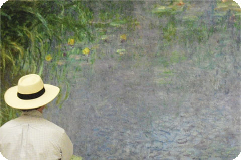

{kind=link}
![ Musée de l'Orangerie The lines can be long to see Claude Monet's huge, meditative Water Lilies (Nymphéas), displayed in two curved galleries designed in 1914 by the master himself. But they are well worth the wait. These works are the highlight of the Orangerie Museum's small but excellent collection, which includes early-20th-century paintings by Renoir, Cézanne, and Matisse. Many hail from the private holdings of art dealer Paul Guillaume (1891-1934), including Guillaume's portrait by Modigliani entitled Novo Pilota, or new pilot, signaling Guillaume's status as an important presence in the arts world. Built in 1852 to shelter orange trees, the museum reopened in 2006 after a long renovation that unearthed a portion of the city's 16th-century wall (you can see remnants on the lower floor).Contact InformationAddress: Jardin des Tuileries at pl. de la Concorde, Louvre/TuileriesPhone: 01-44-77-80-07Cost: €7.50; €14 joint ticket with Musée d'OrsayHours: Wed.--Mon. 9--6Website: www.musee-orangerie.fr](preview://img/131b.jpg){kind=link}
Musée de l'Orangerie
The lines can be long to see Claude Monet's huge, meditative Water Lilies (Nymphéas), displayed in two curved galleries designed in 1914 by the master himself. But they are well worth the wait. These works are the highlight of the Orangerie Museum's small but excellent collection, which includes early-20th-century paintings by Renoir, Cézanne, and Matisse. Many hail from the private holdings of art dealer Paul Guillaume (1891-1934), including Guillaume's portrait by Modigliani entitled Novo Pilota, or new pilot, signaling Guillaume's status as an important presence in the arts world. Built in 1852 to shelter orange trees, the museum reopened in 2006 after a long renovation that unearthed a portion of the city's 16th-century wall (you can see remnants on the lower floor).
Contact Information
Address: Jardin des Tuileries at pl. de la Concorde, Louvre/Tuileries
Phone: 01-44-77-80-07
Cost: €7.50; €14 joint ticket with Musée d'Orsay
Hours: Wed.--Mon. 9--6
Website: www.musee-orangerie.fr